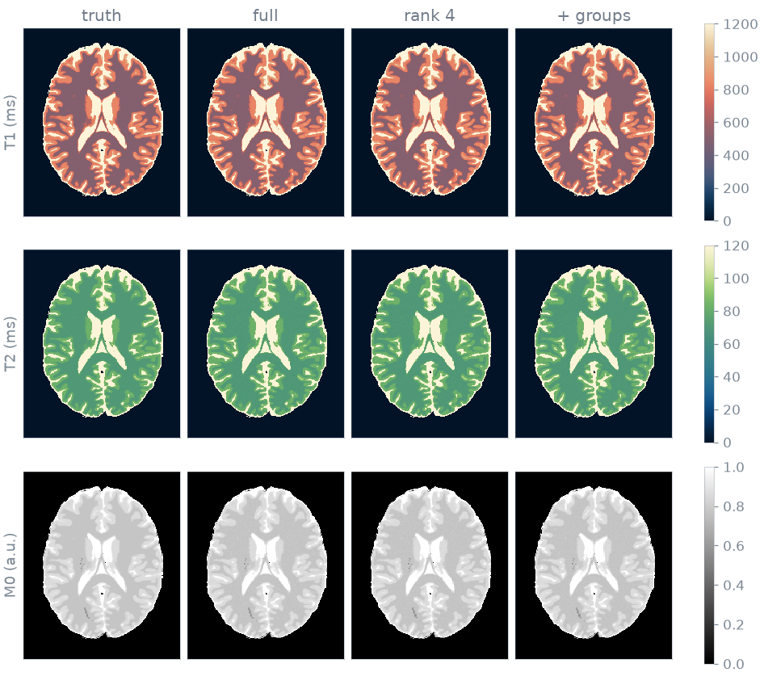
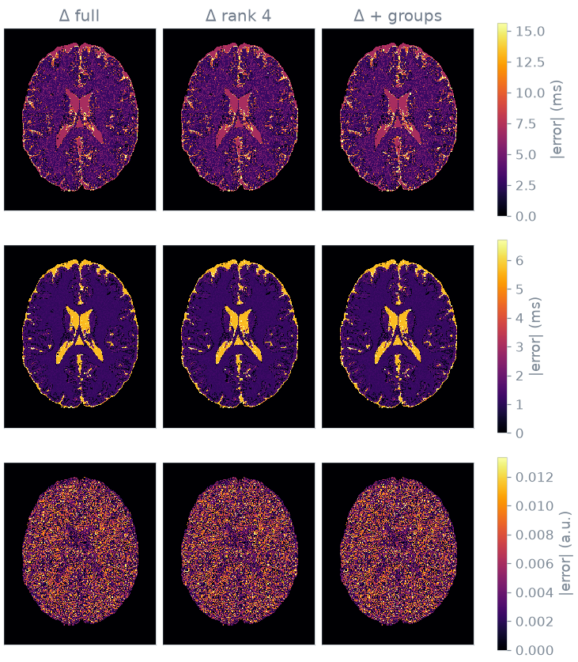

Note
Go to the end to download the full example code or to run this example in your browser via Binder.
Dictionary matching#
You map T1, T2 and proton density in a brain slice from a magnetic resonance fingerprinting (MRF) train by dictionary matching, then reduce the cost of the match in two independent ways: by working in the low-rank subspace spanned by the train, and by clustering the dictionary so that most atoms are not scored.
Prerequisites: Course lesson 1. Your first simulation.
import numpy as np
import torch
from blochsim import Subspace
from blochsim.estimators import DictionaryMatcher
from blochsim.simulators import MRFSimulator
Phantom#
The phantom is BrainWeb subject 0, slice 90: an axial 1 mm slice through the lateral ventricles. BrainWeb provides fuzzy tissue memberships, so each voxel holds a fraction of each tissue and its relaxation times are the fraction-weighted average. About a third of the voxels are mixtures, so the ground truth is a continuum of values rather than four.

Downloading tissues: 0%| | 0/10 [00:00<?, ?it/s]
Downloading phantom_1.0mm_normal_bck: 0.00B [00:00, ?B/s]
Downloading phantom_1.0mm_normal_bck: 1.00kB [00:00, 7.26kB/s]
Downloading phantom_1.0mm_normal_bck: 209kB [00:00, 1.06MB/s]
Downloading phantom_1.0mm_normal_bck: 433kB [00:00, 1.56MB/s]
Downloading phantom_1.0mm_normal_bck: 657kB [00:00, 1.77MB/s]
Downloading phantom_1.0mm_normal_bck: 929kB [00:00, 1.97MB/s]
Downloading phantom_1.0mm_normal_bck: 1.19MB [00:00, 2.16MB/s]
Downloading phantom_1.0mm_normal_bck: 1.45MB [00:00, 2.20MB/s]
Downloading phantom_1.0mm_normal_bck: 1.69MB [00:00, 2.24MB/s]
Downloading phantom_1.0mm_normal_bck: 1.91MB [00:01, 2.17MB/s]
Downloading phantom_1.0mm_normal_bck: 2.14MB [00:01, 2.15MB/s]
Downloading tissues: 10%|█ | 1/10 [00:02<00:19, 2.12s/it]
Downloading phantom_1.0mm_normal_csf: 0.00B [00:00, ?B/s]
Downloading phantom_1.0mm_normal_csf: 1.00kB [00:00, 8.94kB/s]
Downloading phantom_1.0mm_normal_csf: 289kB [00:00, 1.52MB/s]
Downloading tissues: 20%|██ | 2/10 [00:02<00:10, 1.30s/it]
Downloading phantom_1.0mm_normal_gry: 0.00B [00:00, ?B/s]
Downloading phantom_1.0mm_normal_gry: 1.00kB [00:00, 9.47kB/s]
Downloading phantom_1.0mm_normal_gry: 289kB [00:00, 1.49MB/s]
Downloading phantom_1.0mm_normal_gry: 753kB [00:00, 2.84MB/s]
Downloading tissues: 30%|███ | 3/10 [00:03<00:07, 1.03s/it]
Downloading phantom_1.0mm_normal_wht: 0.00B [00:00, ?B/s]
Downloading phantom_1.0mm_normal_wht: 1.00kB [00:00, 7.35kB/s]
Downloading phantom_1.0mm_normal_wht: 176kB [00:00, 902kB/s]
Downloading tissues: 40%|████ | 4/10 [00:04<00:05, 1.15it/s]
Downloading phantom_1.0mm_normal_fat: 0.00B [00:00, ?B/s]
Downloading phantom_1.0mm_normal_fat: 8.81kB [00:00, 75.1kB/s]
Downloading phantom_1.0mm_normal_fat: 325kB [00:00, 1.79MB/s]
Downloading tissues: 50%|█████ | 5/10 [00:04<00:03, 1.29it/s]
Downloading phantom_1.0mm_normal_m-s: 0.00B [00:00, ?B/s]
Downloading phantom_1.0mm_normal_m-s: 1.00kB [00:00, 6.61kB/s]
Downloading phantom_1.0mm_normal_m-s: 249kB [00:00, 1.14MB/s]
Downloading phantom_1.0mm_normal_m-s: 673kB [00:00, 2.34MB/s]
Downloading phantom_1.0mm_normal_m-s: 0.99MB [00:00, 2.71MB/s]
Downloading phantom_1.0mm_normal_m-s: 1.42MB [00:00, 3.31MB/s]
Downloading phantom_1.0mm_normal_m-s: 1.80MB [00:00, 3.51MB/s]
Downloading phantom_1.0mm_normal_m-s: 2.14MB [00:00, 3.50MB/s]
Downloading phantom_1.0mm_normal_m-s: 2.50MB [00:00, 3.54MB/s]
Downloading tissues: 60%|██████ | 6/10 [00:06<00:03, 1.07it/s]
Downloading phantom_1.0mm_normal_skn: 0.00B [00:00, ?B/s]
Downloading phantom_1.0mm_normal_skn: 1.00kB [00:00, 8.72kB/s]
Downloading phantom_1.0mm_normal_skn: 281kB [00:00, 1.44MB/s]
Downloading phantom_1.0mm_normal_skn: 673kB [00:00, 2.48MB/s]
Downloading phantom_1.0mm_normal_skn: 0.99MB [00:00, 2.79MB/s]
Downloading phantom_1.0mm_normal_skn: 1.26MB [00:00, 2.80MB/s]
Downloading phantom_1.0mm_normal_skn: 1.61MB [00:00, 3.06MB/s]
Downloading phantom_1.0mm_normal_skn: 2.00MB [00:00, 3.26MB/s]
Downloading phantom_1.0mm_normal_skn: 2.39MB [00:00, 3.51MB/s]
Downloading phantom_1.0mm_normal_skn: 2.73MB [00:00, 3.23MB/s]
Downloading phantom_1.0mm_normal_skn: 3.04MB [00:01, 3.06MB/s]
Downloading tissues: 70%|███████ | 7/10 [00:07<00:03, 1.11s/it]
Downloading phantom_1.0mm_normal_skl: 0.00B [00:00, ?B/s]
Downloading phantom_1.0mm_normal_skl: 8.81kB [00:00, 77.6kB/s]
Downloading phantom_1.0mm_normal_skl: 425kB [00:00, 2.14MB/s]
Downloading tissues: 80%|████████ | 8/10 [00:08<00:01, 1.05it/s]
Downloading phantom_1.0mm_normal_gli: 0.00B [00:00, ?B/s]
Downloading phantom_1.0mm_normal_gli: 1.00kB [00:00, 7.71kB/s]
Downloading tissues: 90%|█████████ | 9/10 [00:08<00:00, 1.24it/s]
Downloading phantom_1.0mm_normal_mit: 0.00B [00:00, ?B/s]
Downloading phantom_1.0mm_normal_mit: 1.00kB [00:00, 7.84kB/s]
Downloading phantom_1.0mm_normal_mit: 257kB [00:00, 1.24MB/s]
Downloading phantom_1.0mm_normal_mit: 529kB [00:00, 1.76MB/s]
Downloading phantom_1.0mm_normal_mit: 833kB [00:00, 2.24MB/s]
Downloading phantom_1.0mm_normal_mit: 1.11MB [00:00, 2.52MB/s]
Downloading phantom_1.0mm_normal_mit: 1.42MB [00:00, 2.73MB/s]
Downloading phantom_1.0mm_normal_mit: 1.75MB [00:00, 2.91MB/s]
Downloading phantom_1.0mm_normal_mit: 2.06MB [00:00, 2.98MB/s]
Downloading tissues: 100%|██████████| 10/10 [00:09<00:00, 1.05it/s]
Sequence#
The sequence is an inversion followed by 400 repetitions at TR = 10 ms. The flip angle varies smoothly along the train, so that the signal evolutions of different tissues differ by physics and not by the noise of an irregular schedule.
The readouts advance the configuration states and do not rewind them, so the signal evolution is real to float32 precision. The dictionary and the inner products that search it therefore need only the real part. These are the evolutions of white matter, grey matter and CSF:
fingerprints = simulator.simulate(
T1=torch.tensor([500.0, 833.0, 2569.0]), T2=torch.tensor([70.0, 83.0, 329.0])
)
print(f"largest imaginary part: {fingerprints.imag.abs().max():.1e}")
fingerprints = fingerprints.real

largest imaginary part: 0.0e+00
Measurement#
The measurement is the evolution of every voxel at its true T1 and T2, scaled by its proton density, with Gaussian noise of 2% of the peak signal. The estimators are given the same noise level: one trained for more noise than the scan has trusts the data less and returns values closer to the prior.
NOISE_STD = float(0.02 * fingerprints.max())
truth = {
"T1": torch.as_tensor(T1_true[mask].copy()),
"T2": torch.as_tensor(T2_true[mask].copy()),
}
density = torch.as_tensor(M0_true[mask].copy())
clean = simulator.simulate(**truth).real * density[:, None]
generator = torch.Generator().manual_seed(42)
measured = clean + NOISE_STD * torch.randn(clean.shape, generator=generator)
Problem statement#
The unknowns are T1 and T2. Both span more than a decade, so the parameter grids and the training draws are logarithmic: uniform spacing would spend most of the atoms on long T1, where the evolutions are nearly parallel.
Subspace rank#
The 400 contrasts span far fewer than 400 independent directions.
Subspace.fit computes a basis from simulated evolutions and reports the
fraction of their energy that a given rank retains; one minus that fraction
is the relative squared error of projecting onto the basis and back.

At rank 4 the energy left outside the basis is below the energy the noise adds, so projecting onto four directions loses less than the noise already contributes. Every contrast dropped also removes arithmetic from the match.
Dictionary#
A dictionary spans the parameters jointly, so its size is the product of the
grid sizes: here 200 values of T1 by 100 of T2, 20 000 atoms, fine enough
that the grid spacing does not limit the result. Each additional parameter
multiplies the size again. fit simulates the atoms and map returns one
value per voxel for each parameter, and for M0, which follows from the scale
between the measurement and the best-matching atom:
T1_GRID = torch.logspace(np.log10(T1_RANGE[0]), np.log10(T1_RANGE[1]), 200)
T2_GRID = torch.logspace(np.log10(T2_RANGE[0]), np.log10(T2_RANGE[1]), 100)
grid_t1, grid_t2 = torch.meshgrid(T1_GRID, T2_GRID, indexing="ij")
full = DictionaryMatcher(simulator).fit(
T1=grid_t1.reshape(-1), T2=grid_t2.reshape(-1), seed=0
)
maps = full.map(measured) # {"T1": ..., "T2": ..., "M0": ...}
Matching in the subspace#
Passing rank fits the basis, projects the dictionary onto it and stores
it at that rank. The measurement is projected onto the same basis before the
atoms are scored.
low = DictionaryMatcher(simulator).fit(
T1=grid_t1.reshape(-1), T2=grid_t2.reshape(-1), seed=0, rank=RANK
)
Clustered dictionary#
Compression shortens every inner product; clustering reduces how many are computed. Atoms of neighbouring tissues have nearly parallel signal evolutions, so they fall into groups. Each voxel is scored against one representative per group, and groups that cannot contain the best match are excluded before any of their atoms is scored. The grouping is computed in the compressed basis, the space the measurement is already in.
32 groups of 625 atoms; 1.4 still open per voxel
Cost and accuracy#
Times are the best of three passes after a warm-up. model is the memory the fitted estimator holds between volumes. peak is the maximum GPU memory allocated while mapping the slice, which decides whether a volume fits or has to be processed in pieces; it is blank on a machine without a GPU. Errors are medians over the brain voxels, relative to the truth.
method train map model peak T1 T2 M0
----------------------------------------------------------------------------------------
match, 400 contrasts 9.3s 8.20s 122.3 MiB -- 0.6% 1.6% 0.4%
match, rank 4 1.7s 1.64s 1.4 MiB -- 0.6% 1.6% 0.4%
match, rank 4 + groups 1.7s 0.08s 1.4 MiB -- 0.6% 1.6% 0.4%
Maps#
The maps of each method, and below them the absolute error on a scale of its own for each parameter.


Specification#
What this page did, stated the way you would ask an agent for it:
With blochsim, map T1, T2 and M0 in BrainWeb subject 0, slice 90, from an
inversion-prepared MRF train of 400 repetitions (TR 10 ms, TI 20 ms,
flip angle 10 + 50 sin^2(pi n / 400) deg) at 2% noise. Use a
DictionaryMatcher over 200 log-spaced T1 by 100 log-spaced T2 values.
Compare the full match, the match at subspace rank 4 and the match at
rank 4 with 32 groups, reporting training time, mapping time, estimator
memory and the median relative error of each map.
Total running time of the script: (1 minutes 1.146 seconds)